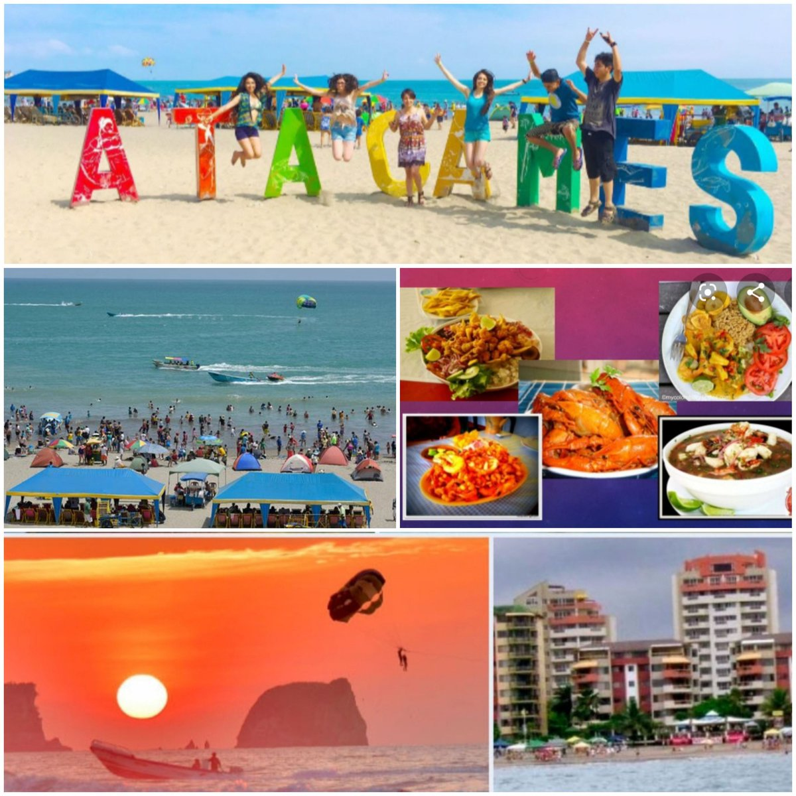

Sobre nosotros
Conoce la historia y el propósito de Explora Atacames.
Nuestra historia
Explora Atacames es una agencia turística ficticia creada con el propósito de promover la belleza natural, cultural y gastronómica de Atacames, uno de los destinos costeros más visitados de la provincia de Esmeraldas.
Nuestro proyecto busca dar a conocer las playas, los atractivos turísticos, la gastronomía y las actividades recreativas que hacen de Atacames un destino especial.
Creemos que viajar es una oportunidad para descubrir nuevas culturas, disfrutar de la naturaleza y crear experiencias inolvidables.

NUESTRO PROPÓSITO
Misión y visión
Misión
Promover el turismo responsable en Atacames mediante experiencias que permitan a los visitantes conocer sus playas, gastronomía, cultura y naturaleza.
Visión
Ser una agencia turística referente en la promoción de Atacames y sus atractivos, destacando la riqueza natural y cultural de la provincia de Esmeraldas.
LO QUE NOS REPRESENTA
Nuestros valores
Responsabilidad
Promovemos el cuidado de los espacios naturales y turísticos.
Compromiso
Trabajamos para ofrecer experiencias turísticas de calidad.
Respeto
Valoramos la cultura, las comunidades y la naturaleza.
Calidad
Buscamos brindar información útil y experiencias memorables.
¿POR QUÉ VISITARLO?